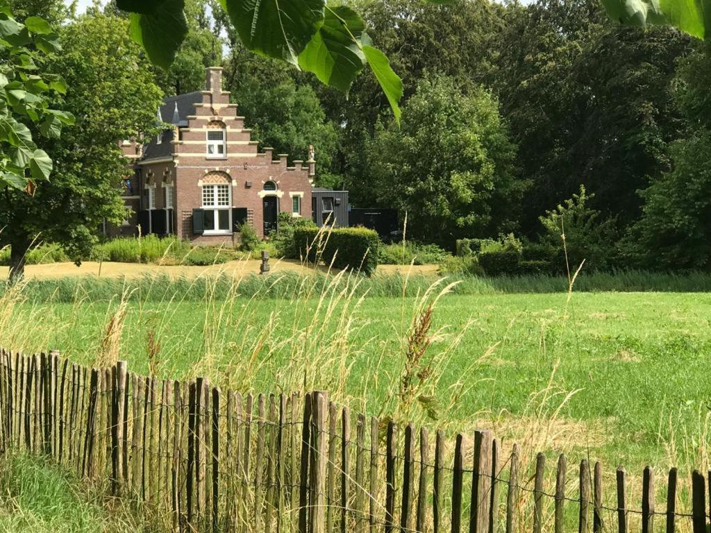
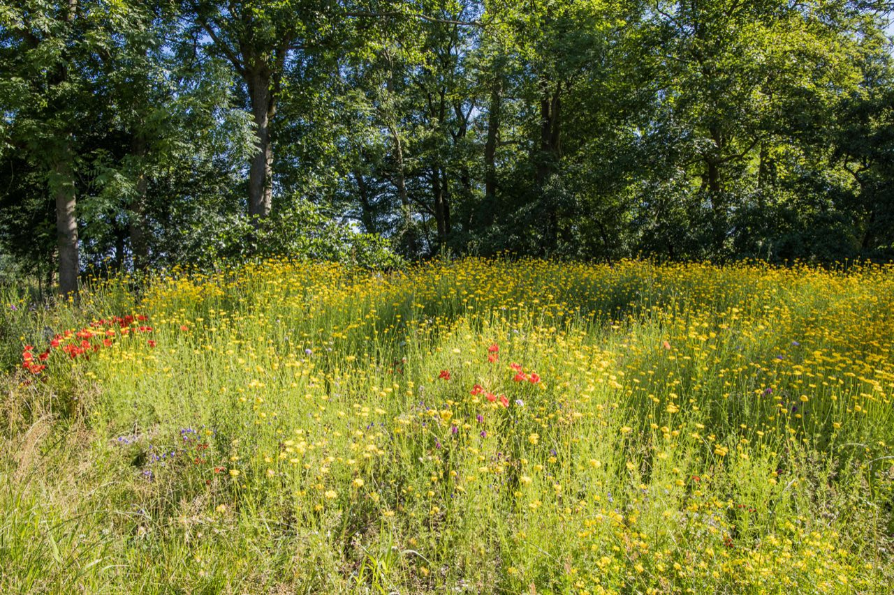
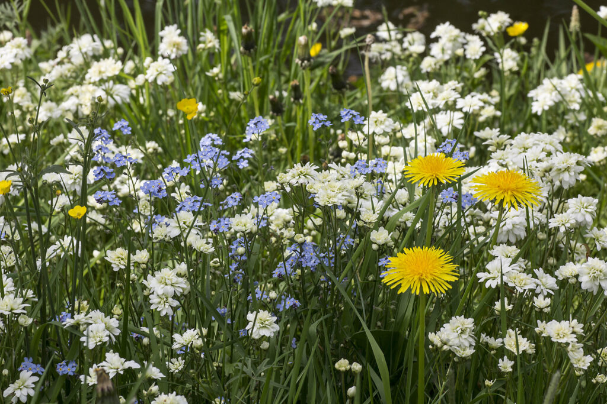
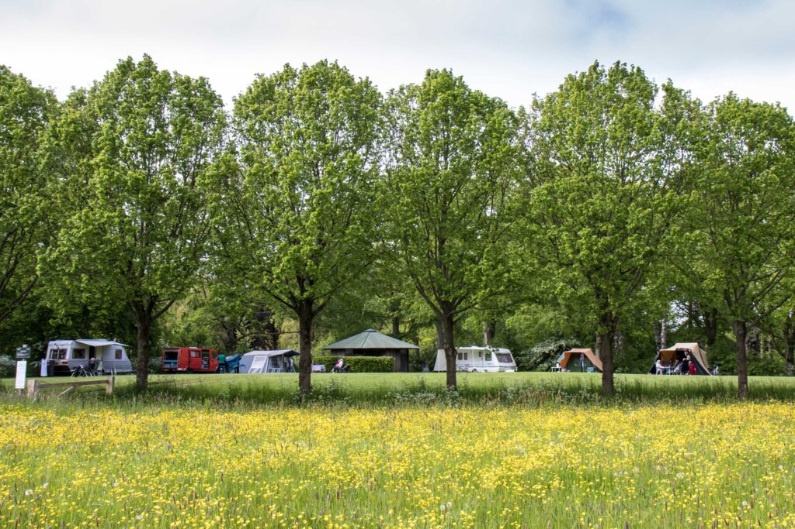
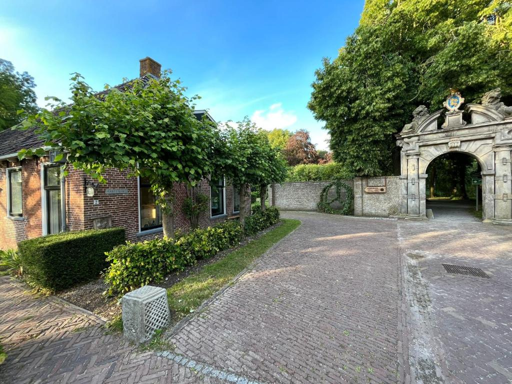
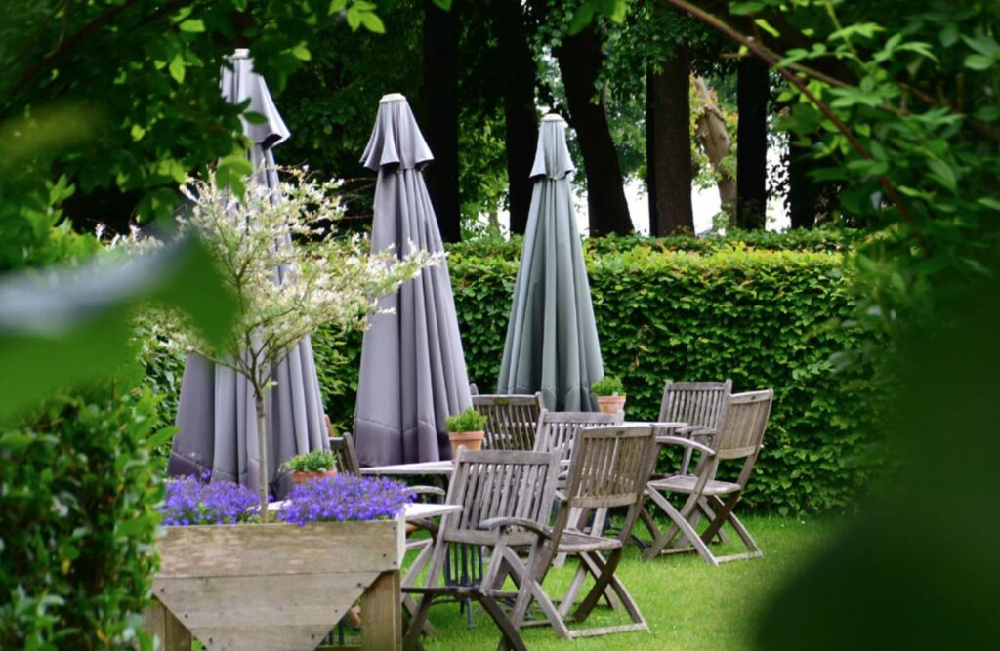
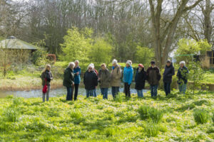
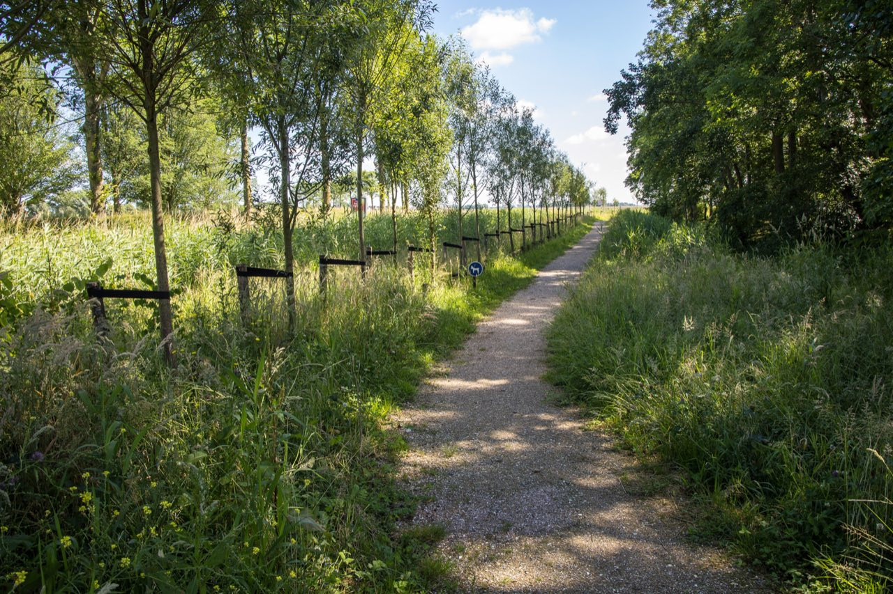
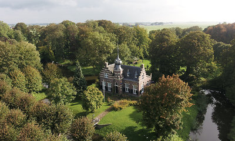

Jouw buitenplaats in Koarnjum. De natuur doet het werk, jij bepaalt het tempo. Hier ruil je hectiek in voor een eigen ritme.
Van praktische info over je verblijfplaats tot de mooiste plekken in de omgeving.
Camping, B&B en Túnmanswente: tarieven, faciliteiten, praktische tips.
Bekijk detailsKies snel wat past bij je dag — dichtbij, met kinderen, bij regen of een dagtrip.
Bekijk activiteitenWandel- en fietsroutes, restaurants en bezienswaardigheden in de buurt.
Ontdek de omgevingAlle tips, routes en adressen op één kaart.
Open kaartHier mag de tijd even langzamer.Martenastate · Koarnjum

Martenastate gaat terug tot circa 1400, toen Sytze Martena hier woonde. Vernoemd naar Duco Martena — staatsman, held en geleerde. In 1899 verrees het huidige neo-renaissance kasteel met zijn karakteristieke uienvormige toren.
Sinds 2000 beheert It Fryske Gea het landgoed ecologisch. Martenastate is erkend als één van de beste stinzenflora-locaties van Nederland en staat op de lijst als nationaal monument.
Stinzenplanten zijn verwilderde bolgewassen die al eeuwen rond historische landgoederen groeien. In het voorjaar (februari–april) bloeit Martenastate in tinten van paars, wit en geel.
Sneeuwklokjes, krokussen, wilde hyacinten, winterakoniet — elk jaar opnieuw een schouwspel dat bezoekers van heinde en verre trekt.

Van de eerste sneeuwklokjes in februari tot de gouden herfstbladeren in oktober — elk seizoen heeft zijn eigen sfeer.
Februari – maart
April – mei
Juni – augustus
September – oktober
Van een rustige ochtend tot een volle dag op pad — voor elk humeur een passende combinatie.
Beelden uit het seizoen, gemaakt in de omgeving.







Een paar plekken en momenten die het waard zijn.
Loop bij zonsopgang door het park. Dauw op de stinzenflora, vogels, mist boven het gras.
In 20 minuten in Leeuwarden. Langs de Middelzee, door de polder.
Theetuin op het landgoed. Koffie, uitzicht op het park.
Het verhaal van Friesland. De Mata Hari-tentoonstelling is een aanrader.
De wandelingen van It Fryske Gea openen het park op een andere manier.
30 minuten rijden. Wadlopen, zeehonden, weidse lucht.
Deel de link met je reisgenoten of bewaar 'm op je telefoon. De gids werkt ook offline — handig in het park of bij slecht signaal.
Tip: voeg de gids toe aan je startscherm voor één-tik-toegang.